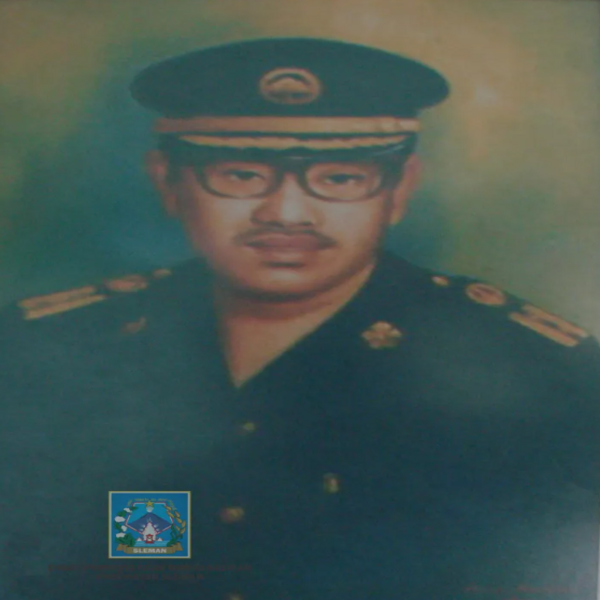

KRT. PRINGGODININGRAT
Bupati Sleman 1945-1947
PROFIL BUPATI SLEMAN KRT. PRINGGODININGRAT
Bupati Sleman
Periode Pemerintahan Tahun 1945 – 1947
Kabupaten Sleman merupakan wilayah yang tidak terpisahkan dengan Daerah Istimewa Yogyakarta yang merupakan provinsi yang berdasarkan wilayah Kasultanan Ngayogyakarta dan Kadipaten Pakualaman. Menurut sejarah pada tahun 1916, telah terjadi reorganisasi wilayah Kasultanan Yogyakarta (Mataram). Reorganisasi tersebut tertuang pada Rijksblad No. 11 Tahun 1916 yang berisi bahwa wilayah Mataram dibagi menjadi Kabupaten Kae lasan, Kabupaten Bantul dan Kabupaten Sulaiman (sekarang Sleman), yang dikepalai oleh seorang bupati. Keberadaan kabupaten tersebut membawahi beberapa distrik dan dikepalai oleh panji. Kabupaten Sulaiman sendiri terbagi menjadi 4 distrik, yaitu distrik Mlati (terbagi dalam 5 onderdistrik dan 46 kalurahan), distrik Klegung (terbagi dalam 6 onderdistrik dan 52 kalurahan), distrik Jumeneng (terbagi dalam 6 onderdistrik dan 58 kalurahan), serta distrik Godean (terbagi dalam 8 onderdistrik dan 55 kalurahan).
Dalam perjalanannya, menurut Rijksblad No. 12 Kabupaten Gunung Kidul termasuk dalam Kasultanan Yogyakarta, menurut Rijksblad No. 16 terbentuk Kabupaten Kota, serta menurut Rijksblad No. 21 terbentuk Kabupaten Kulon Progo. Pembagian wilayah Kasultanan Yogyakarta pada tahun 1927 mengalami perubahan wilayah, dari 6 kabupaten disederhanakan menjadi 4 kabupaten yaitu Kabupaten Yogyakarta (2 distrik), Kabupaten Bantul (4 distrik), Kabupaten Kulon Progo (2 distrik), serta Kabupaten Gunung Kidul (3 distrik). Kabupaten Sulaiman mengalami penurunan hirarkis yaitu menjadi salah satu distrik di Kabupaten Yogyakarta. Pada tahun 1942 kembali mengalami perubahan dengan munculnya Jogyakarta Koorei, membagi Kasultanan Yogyakarta menjadi 4 wilayah yaitu Kabupaten Yogyakarta (3 kawedanan dengan Bupati KRT. Harjodiningrat), Kabupaten Bantul (4 kawedanan dengan Bupati KRT. Dirjokusumo), Kabupaten Gunung Kidul (3 kawedanan dengan Bupati KRT. Djojodiningrat), dan Kabupaten Kulon Progo (2 kawedanan dengan Bupati KRT. Pringgohadiningrat). Dalam Jogjakarta Koorei diatur tentang Perubahan Tata Pemerintahan dan Pembagian Daerah Kasoeltanan Jogjakarta (Jogjakarta Koorei), hal ini termuat dalam pasal 1 yang menyebutkan Kasoeltanan Jogjakarta (Jogjakarta Koorei) terbagi atas :
1. Kaboepaten Kota Jogjakarta (Jogjakarta Si) dan
2. Kaboepaten (Ken) Sleman, Bantul, Gunungkidul, dan Kulonprogo
Pada tanggal 8 April 1945 kembali Kasultanan Yogyakarta mengalami perubahan dengan munculnya Jogjakarta Koorei angka 2 oleh Sri Sultan Hamengkubuwono IX, dimana wilayah Kasultanan Yogyakarta dibagi menjadi 5 Kabupaten yaitu Kabupaten Kota Yogyakarta, Kabupaten Sleman, Kabupaten Bantul, Kabupaten Gunung Kidul, dan Kabupaten Kulon Progo. Dengan banyaknya perubahan yang terjadi pada wilayah Kasultanan Yogyakarta, maka data yang tertuang dalam Rijksblad No. 11 tanggal 15 Mei 1916 merupakan data yang dapat dijadikan legitimasi eksistensi awal Kabupaten Sleman serta dijadikan sebagai Hari Jadi Kabupaten Sleman. Dengan dijadikannya Sleman sebagai Kabupaten, maka wilayah Sleman terdiri dari 17 kapanewon (sekarang kecamatan) yang meliputi 258 kalurahan.
Ibukota Kabupaten Sleman pada waktu itu adalah ibukota lama yakni di wilayah Sleman Utara, yang sekarang bernama Triharjo, Kecamatan Sleman. Bupati yang menjabat pada masa itu adalah KRT. Pringgodiningrat selama periode tahun 1945 – 1947. Sarana dan prasarana yang dimiliki pada saat itu masih sangat sederhana apabila dibandingkan dengan kota-kota lain di Pulau Jawa, antara lain gedung pusat pemerintahan (sekarang Puskesmas Sleman), pasar (sekarang Pasar Sleman), masjid (masjid Sleman) dan stasiun kereta api (lokasinya sekarang sudah berubah menjadi taman segitiga Sleman). Sedangkan infrastruktur yang tidak dimiliki adalah penjara, alun-alun, markas prajurit, dan sebagainya.
KRT. Pringgodiningrat pernah beberapa kali menjabat sebagai Bupati, yaitu sebagai Bupati Purworejo, Bupati Gunung Kidul, Bupati Kulon Progo, dan yang terakhir adalah sebagai Bupati Kabupaten Sleman. Di Kabupaten Sleman, beliau merupakan Bupati Sleman yang pertama sejak Indonesia berada pada masa Republik yaitu tahun 1945 – 1947. Sebenarnya istilah pemimpin daerah atau yang sekarang disebut sebagai Bupati sudah ada sejak sebelum Indonesia merdeka, hanya penyebutannya saja yang berbeda. Ada istilah yaitu Mangun Djoyo, ada pula Pudjo Kusumo. Mangun Djoyo ke III dan IV konon merupakan keturunan dari KRT. Pringgodiningrat.
Ketika jaman revolusi terjadi, para pegawai pemerintah meninggalkan ibukota Sleman ikut keluar kota mengatur strategi. Dalam keadaan demikian perkantoran pemerintahan Kabupaten Sleman menjadi sepi dan terjadi “Bumi Angkut” oleh masyarakat yang tidak bertanggung jawab, sehingga menyebabkan gedung-gedung pemerintah tidak layak lagi untuk digunakan sebagai tempat bekerja ataupun sebagai tempat pelayanan masyarakat. Dalam kondisi yang serba carut marut itu, Bupati Sleman KRT. Pringgodiningrat pada tahun 1947 segera mengambil langkah untuk memindahkan pusat pemerintahan Kabupaten Sleman ke Ambarukmo, di petilasan Dalem serta bekas pusat pendidikan perwira polisi yang pertama di Indonesia (sekarang Pendopo Hotel Royal Ambarukmo).
Masa kepemimpinan KRT. Pringgodiningrat memang hanya berlangsung cukup singkat. Tak lama kemudian digantikan oleh KRT. Projodiningrat. Makam KRT. Pringgodiningrat berada di Karongan, Jogotirto, Berbah, Sleman. Sebagai bentuk penghargaan yang diberikan Pemerintah Kabupaten Sleman kepada KRT. Pringgodiningrat sebagai tokoh yang dianggap sudah berjasa mengharumkam nama Kabupaten Sleman adalah dengan mengabadikan nama jalan yang berada di ruas jalan mulai dari perempatan Denggung sampai ke Pangukan (arah ke kiri dari Jalan Magelang-Semarang) sebagai Jalan KRT. Pringgodiningrat menggantikan jalan Merapi yang berlaku mulai tanggal 10 Agustus 2006. Peresmian nama jalan tersebut ditandai dengan pembukaan selubung patung yang berada di ujung jalan.
Sumber diambil dari :
1. Sekilas Pembangunan Kabupaten Sleman 2004-2005
2. Kabupaten Selaman Dalam Perjalanan Sejarah
KRT. PRADJADININGRAT
Bupati Sleman 1947 – 1950
PROFIL BUPATI SLEMAN KRT. PRADJADININGRAT
Bupati Sleman
Periode Pemerintahan Tahun 1955 – 1959
Bupati KRT Pradjadiningrat merupakan bupati yang ke dua di Kabupaten Sleman, beliau menggantikan KRT Pringgodiningrat yang merupakan Bupati Sleman yang pertama. Penataan wilayah Kasultanan Yogyakarta yang didasarkan Rijksblad No. 11 tertanggal 15 Mei 1916, menegaskan kembali bahwa Sleman sebagai Kabupaten dengan wilayah terdiri dari 17 kapewon (Son) yang meliputi 258 Kalurahan (KU). Ibukota Kabupaten Sleman (Sleman Syi) menempati ibukota lama yakni di wilayah Sleman Utara, yakni di Desa Triharjo, Kecamatan Sleman. Bupati yang menjabat pada masa tersebut adalah KRT Pringgodiningrat. Pada saat itu infrastruktur yang dimiliki ibukota lama sangat sederhana apabila dibandingkan dengan kota-kota lain di tanah Jawa. Adapun sarana yang dimiliki adalah gedung pusat pemerintahan, pasar ( yang saat ini masih operasional yakni Pasar Sleman), masjid (Masjid Sleman) dan Statsiun Kereta Api (sekarang berubah menjadi taman segi tiga Sleman), sedangkan infrastruktur lain seperti alun-alun, penjara, markas prajurit dan sebagainya sebagai syarat ibukota tidak dimiliki.
Pada waktu Belanda melakukan agresi militer ke Indonesia, termasuk juga diwilayah Sleman Yogyakarta, para pegawai pemerintah meninggalkan ibukota Sleman untuk berperan serta dalam mengatur strategi sehingga hal demikian menyebabkan perkantoran pemerintah Kabupaten Sleman menjadi sepi dan terjadi “Bumi Angkut” oleh gerombolan masyarakat yang tidak tertanggungjawab akibatnya gedung-gedung pemerintah tidak layak lagi menjadi tempat pelayanan masyarakat karena kondisi gedung-gedung pelayanan masyarakat memperhatinkan, Bupati Sleman KRT Pringgodiningrat yang kemudian diganti KRT Pradjadiningrat pada tahun 1947 memindahkan pusat pelayanan Kabupaten Sleman ke Ambarukmo, tepatnya di Pesanggrahan Ambarukmo yang merupakan Petilasan Dalem serta bekas pusat pendidikan perwira polisi yang pertama di Indonesia ( sekarang menjadi Pendopo Hotel Ambarukmo), namun pemindahan tersebut tidak dibarengi dengan pemindahan ibukota.
Menurut keterangan yang disampaikan dari Bapak RM Banu Subadiyo yang merupakan ahli waris dari mantan Bupati Sleman KRT Pradjadiningrat ( wawancara, 31 Mei 2012), bahwa sejak proklamasi kemerdekaan Indonesia tanggal 17 Agustus 1945 sampai dengan tahun 1950 KRT Pradjadiningrat menjadi Bupati Sleman. Untuk serah terima jabatan dari Bupati KRT Pringgodiningrat ke Bupati KRT Pradjadiningrat dilakukan di Triharjo, Sleman.
Ketika terjadi agresi militer Belanda ke II tanggal 19 Desember 1948 di Yogyakarta terjadi masa krisis antara pejuang kemerdekaan dan pasukan Belanda. Pada malam harinya TNI, Polisi, Sipil termasuk Bupati KRT Pradjadiningrat dan para pejabat serta para pegawai Kabupaten Sleman meninggalkan Ibukota Sleman (Triharjo) ikut keluar kota mengatur strategi dari luar kota ( pada kawasan gerilya ). Sementara perkantoran Sleman menjadi sepi, tidak ada penjaga, didatangi oleh gerombolan masyarakat yang kurang bertanggungjawab melakukan “Bumi Angkut“ sehingga menyebabkan gedung-gedung perkantoran tidak layak lagi untuk dijadikan tempat pelayanan. Atas permohonan Bupati Sleman KRT Pradjadiningrat dan kemudian Sri Sultan Hamengkubuwono IX berkenan mengijinkan Pesanggrahan Dalem Ambarukmo untuk dijadikan kegiatan pelayanan Pemerintahan Kabupaten Sleman. Pada masa krisis tersebut, Sri Sultan Hamengkubuwono IX dan Sri Paku Alam VIII meletakkan jabatan untuk mengatur perlawanan gerilya terhadap Belanda baik di luar maupun di dalam kota, Sultan menyetujui KRT Pradjadiningrat, Bupati Sleman sebagai wakilnya di luar kota meskipun yang menunjuk pemerintah militer Republik Indonesia.
Berdasarkan Buku Kabupaten Sleman Dalam Perjalanan Sejarah yang diterbitkan oleh Bagian Humas Sekretariat Daerah Kabupaten Sleman Tahun 2002, KRT Pradjadiningrat merupakan Bupati Sleman kedua pada waktu Indonesia Merdeka. Beliau menjabat sejak tahun 1947 – 1950. Sebelumnya Bupati Sleman di jabat oleh KRT Pringgodiningrat yang menduduki jabatannya selama dua tahun, yaitu tahun 1945 – 1947.
Pada waktu kecil KRT Pradjadiningrat mempunyai nama Margana ( wawancara, 31 Mei 2012). Seiring beliau beranjak dewasa dan memperoleh berbagai jabatan dari karton nama Margana, berganti-ganti mengikuti jabatan dan wilayah yang menjadi kewenangannya, seperti pada tahun 1921 sewaktu menjabat asisten Panji di Pakem dan di Sewon Bantul pada tahun 1923 dengan nama NG. Kartawidjaja. Pada tahun 1926 bernama NG. Djajapringgodirdjo sewaktu diperbantukan sebagai Sekretaris Kabupaten Adikarto Wates Pakualaman. Kemudian pada tahun 1928 dan 1933 serta 1934 menjabat sebagai Wedana di Sanden Bantul dan Wedana Bantul serta diperbantukan di Kabupaten Bantul dengan nama NG. Djajapringgodirdjo. Tahun 1936 menjabat sebagai Wedana di Semanu Gunungkidul bernama NG. Hardja Pringgodirdjo.
Kemudian semenjak Proklamasi Kemerdekaan Indonesia 17 Agustus 1945 sampai dengan tahun 1950 menjabat sebagai Bupati Sleman bernama KRT Pradjadiningrat. Selain mengalami langsung bahkan ikut bergeliya melawan Belanda dan sekutunya pada waktu agresi militer Belanda di Yogyakarta, peristiwa pemberontakan PKI ( Madiun Affair ) tanggal 18 September 1948 dan Yogyakarta kembali tanggal 06 Juli 1949, pemerintah RI pindah ke Jakarta 26 Desember 1949 merupakan rangkaian peristiwa yang mengiringi beliau sebagai Bupati Sleman. Selepas menjabat sebagai Bupati Sleman, KRT Pradjadiningrat oleh pejabat Gubernur Sri Paduka Paku Alam VIII ditunjuk untuk menjabat sebagai Sekretaris Gubernur militer V Yogyakarta. Pada tahun 1950 setelah pensiun dari pegawai negeri sipil oleh Sri Sultan Hamengkubuwono IX, KRT Pradjadiningrat diberi pekerjaan di perusahaan besi daerah ( Purosani ) Yogyakarta sebagai direktur, tidak lama kemudian pindah ke pabrik gula PT Madukismo sampai beliau meninggal.
Pada tanggal 26 Desember 1973, Bapak KRT Pradjadiningrat meninggal dunia dan dimakamkan di Makam Kuncen Yogyakarta. Adapun pemakamannya KRT Pradjadiningrat tidak disertai dengan upacara protokoler. Tanda penghargaan yang diperoleh Almarhum KRT Pradjadiningrat berupa piagam/surat keputusan dari Dewan Harian Daerah Angkatan 45 Propinsi DIY Nomor: 058 / SKEP/DHD-45/XI/ 1996, tanggal 6 Nopember 1996 tentang Pemancangan Bambu Runcing Merah Putih.
*Catatan :
1. Pada waktu pendudukan Jepang, KRT Pradjadiningrat bersama Bapak Lurah Karangwaru sangat menentang pengiriman Romusha dan pernah ditahan oleh Kempei-Tai Jepang kemudian dibebaskan oleh para pejuang di bawah tanah
2. Pertengahan bulan Maret 1949 saat bergerilya menjabat dan bertindak selaku Kepala Pemerintahan Sipil DIY. Atas perintah dari Sri Paduka Sultan HB IX bekerja sama dengan Komandan WK III – SUB WK – S.T.C BP. Letkol Selo Ali dan para Bupati serta kepolisian Bapak Djen Mohamad sampai dengan penyerahan kedaulatan
3. Pada tanggal 1 Agustus 1949 ( Sesudah Yogya Kembali ) menjabat sebagai sekretaris Gubernur Militer V di Kota Yogyakarta.
4. Pada tanggal 17 April 1950 menjalani masa pensiun sebagai pegawai negeri.
Sumber diambil dari :
1. Buku 84 Tahun Kabupaten Sleman diterbitkan Bagian Humas, Setda Kabupaten Sleman Tahun 2000
2. Kabupaten Sleman Dalam Perjalanan Sejarah diterbitkan Bagian Humas, Setda Kabupaten Sleman Tahun 2002
3. Riwayat tugas/jabatan KRT Pradjadiningrat, September 1996
4. Transkrip wawancara dari RM Banu Subadiyo, ahli waris dari Almarhum mantan Bupati Sleman KRT Pradjadiningrat, tanggal 31 Mei 2012.
KRT. DIPODININGRAT
Bupati Sleman 1950-1955
PROFIL BUPATI SLEMAN KRT. DIPODININGRAT
Bupati Sleman
Periode Pemerintahan Tahun 1955 – 1959
Bupati Sleman yang ketiga adalah K.R.T. Dipodiningrat yang menurut Daftar Riwayat Hidup yang ditulis dan ditandatangani oleh beliau sendiri pada tanggal 10 Oktober 1963 dimana tertulis bahwa KRT Dipodiningrat menjadi Bupati Pamong Pradja Sleman pada tahun 1949 s/d 1952. Selepas beliau menjabat sebagai Bupati Pamong Pradja Sleman kemudian beliau menjabat sebagai Kepala Dinas Pemerintahan Umum Daerah Istimewa Yogyakarta pada tahun 1953 sampai dengan beliau purna tugas (pensiun) tahun 1960. Selanjutnya sejak tahun 1960 KRT Dipodiningrat beralih tugas mengabdi sebagai administratur Persatuan Seksi-Seksi Pembangunan Masyarakat Universitas Gadjah Mada.
K.R.T Dipodiningrat mempunyai nama kecil R.M. Sunarjo lahir pada tanggal 3 April 1911 yang kemudian menikah dengan Raden Adjeng Siti Suparti pada tahun 1937 dan dikarunia 6 orang putra (2 putri dan 4 putra).
Masa pemerintahan Bupati KRT Dipodiningrat untuk pusat pelayan kabupaten sudah berada di Ambarukmo tepatnya berada di petilasan Dalem dan bekas pusat pendidikan perwira polisi yang pertama di Indonesia (sekarang menjadi pendopo Hotel Royal Ambarukmo).Perlu digarisbawahi bahwa Ambarukmo pada waktu itu hanya menjadi pusat pelayanan Kabupaten Sleman dan tidak dibarengi dengan pemindahan ibukota. Jadi meskipun ibukotanya tetap di Sleman, bupatinya melayani masyarakat di Ambarukmo.
Pada masa pemerintahan Bupati Dipodiningrat pelaksanaan UU No 22/1948 tentang Pemerintahan Daerah sudah mulai dilaksanakan pada tahun 1950 dimana pada masa itu dikeluarkan Undang-Undang No. 15 Tahun 1950 tentang Pembentukan Daerah-Daerah Kabupaten dalam lingkungan Daerah Istimewa Yogyakarta. Berdasarkan undang-undang Nomor 15 Tahun 1950 jumlah anggota DPR 22 orang, jumlah anggota DPD lima orang di luar Kepala Daerah, dan urusan rumah tangga yang diserahkan 14 buah anata lain: 1. Urusan Umum; 2. Urusan Pemerintahan Umum; 3. Urusan Agraria; 4. Urusan Pengairan; 5. Urusan Pertanian; 6. Urusan Kehewanan; 7. Urusan Kerajinan, Perdagangan Dalam Negeri dan Perindustrian; 8. Urusan Perburuhan; 9. Urusan Sosial; 10. Urusan Pembagian (Distribusi); 11. Urusan Penerangan; 12. Urusan PP &K; 13. Urusan Kesehatan dan; 14. Urusan Perusahaan (Suwarno, 1994:286)
Kondisi pemerintahan pada masa pemerintahan KRT Dipodiningrat cukup kondusif karena Bupati, Wakil Bupati, para pegawai banyak yang menetap di Kraton Ambarukmo. Komunikasi antar anak-anak para pegawai dan anak anak bupati sangat baik. Anak-anak dapat belajar dan melakukan kegiatan yang menyenangkan bersama-sama misalnya menari dan bermain olahraga di Pesanggrahan Ambarukmo. Setiap Jumat sore ada latihan tari Jawa tradisional, guru-gurunya dari Among Bekso Kraton Yogyakarta. Siswa tari dari sekitar Ambarukmo dan dari AURI Adisucipto. Beberapa pentas tari yang pernah ditampilkan adalah wayang orang dengan lakon “Narasoma dan Lahirnya Gatotkaca”.Setiap tanggal 17 Agustus selalu ada peringatan Hari Ulang Tahun Kemerdekaan Republik Indonesia yang menampilkan pentas seni, pameran hasil karya tiap-tiap kelurahan dan kantor penerangan Pemerintahan Kabupaten Sleman.
KRT Dipodiningrat senantiasa menanamkan sifat-sifat yang positif dan menjadi suri tauladan baik bagi masyarakat maupun keluarganya. Sifat jujur dan didiplin menjadi dasar dalam segala tindakan. Seperti yag dituturkan oleh Putri Pertama KRT Dipodiningrat yaitu Dra. R.A. Pientamtijastirin bahwa beliau selalu mengajarkan agar anak-anaknya beribadah secara Islam, mengamalkan Pancasila dan memelihara serta melestarikan budaya Jawa. Selain itu sebagai anak-anaknya wajib untuk menuntut ilmu setinggi-tingginya karena ilmu dapat dijadikan untuk bekal di kemudian hari. Sehingga sampai saat ini para putra-putri dan cucu telah melaksanakan cita-cita KRT Dipodiningrat secara konsekwen.
KRT Dipodiningrat menutup usia pada tahun 1976 kemudian disusul sang istri yang wafat pada tahun 1979. Bupati KRT Dipodiningrat dimakamkan di Makam Hastorenggo Kotagede.
Sumber diambil dari :
1. Wawancara dengan ahli waris Bupati KRT Dipodiningrat (R.M Siswantojo dan R.A Pientamtijastirin)
2. Daftar Riwayat Hidup Bupati KRT Dipodiningrat yang ditulis dan ditandatangani oleh KRT Dipodiningrat
3. Riwayat tugas/jabatan KRT Pradjadiningrat, September 1996
4. Transkrip wawancara dari RM Banu Subadiyo, ahli waris dari Almarhum mantan Bupati Sleman KRT Pradjadiningrat, tanggal 31 Mei 2012.
KRT. PRAWIRODININGRAT
Bupati Sleman 1955-1959
PROFIL BUPATI SLEMAN KRT. PRAWIRODININGRAT
Bupati Sleman
Periode Pemerintahan Tahun 1955 – 1959
Theorie tanpa pelaksanaan adalah mati, pelaksanaan tanpa theorie tiada terkemudi......
Sebaris kalimat diatas adalah motto dari KRT. Prawirodiningrat yang tertulis dalam buku Dokumentasi DPRD Kabupaten Sleman tahun 1958. KRT.Prawirodiningrat menjabat sebagai Bupati Kepala Daerah Sleman pada periode tahun 1955-1959. Beliau dilantik menggantikan Bupati terdahulu yaitu KRT. Dipodiningrat. Pada masa pemerintahan beliau ibukota pemerintahan Kabupaten Sleman masih bertempat di Pesanggrahan Ambarukmo.
Pada awal masa pemerintahan KRT. Prawirodiningrat merupakan masa pelaksanaan demokrasi liberal, pada tahun 1955 untuk pertama kalinya Indonesia menyelenggarakan pemilihan umum. Pada waktu itu terjadi banyak gejolak dimana pertentangan partai, gejolak politik, situasi oposisi tumbuh dengan suburnya. Situasi politik ini berdampak pada segala bidang, semua hal dihubung-hubungkan dengan politik, banyak terjadi kecemburuan sosial dan pengkotak-kotakan masyarakat, hal-hal tersebut berdampak kepada berbagai sektor kehidupan pada masa itu terutama pada sektor perekonomian. Namun meskipun situasi penuh dengan suasana oposisi, Sleman dibawah Bupati KRT. Prawirodiningrat masih sempat menunjukkan identitasnya dengan kemampuan yang ada dan tekad menciptakan kesejahteraan rakyat, pembangunan dijalankan dengan wajar dan penuh tanggungjawab baik pembangunan fisik dan non fisik seperti masalah agama dan ideologis pancasila.
“Bupati kembar”
Pada tahun 1957 dengan dikeluarkanya UU No. 1 mengenai pembagian daerah Republik Indonesia dan aturan Otonomi Daerah maka penyebutan Kabupaten Sleman berubah menjadi Daerah Swatantra Tingkat II, sehingga sebutan kepala daerahnya menjadi Kepala Daerah Swatantra. Daerah Swatantra adalah daerah yang berhak mengurus rumah tangganya sendiri atau kalau kita menyebutnya sekarang adalah daerah otonom. Pada masa ini pula terdapat peraturan Departemen Dalam Negeri bahwa tiap-tiap kabupaten selain memiliki seorang bupati yang diangkat secara sektoral sebagai pegawai
Kementrian Dalam Negeri, juga harus ada kepala daerah yang dipilih secara legislatif (DPRD). Pada masa ini yang terpilih menjadi Kepala Daerah Swatantra dari legislatif adalah Buchori S. Pranotohadi.
Jadi pasca dikeluarkanya peraturan tersebut, Sleman memiliki dua orang Bupati “Bupati Kembar” yaitu KRT. Prawirodiningrat dan Buchori S Pranotohadi. Namun peraturan mengenai “ Bupati Kembar” tersebut hanya berlangsung kurang lebih selama 2 tahun yaitu pada tahun 1958 s/d tahun 1959 yaitu dengan diterbitkannya Penetapan Presiden No. 6 Tahun 1959 dan No.5 Tahun 1960 untuk memberlakukan kembali UUD 1945.
Hierarki pemerintahan pada masa kepemimpinan KRT. Prawirodiningrat disebut sebagai Pemerintahan Pamong Praja dengan susunan yaitu KRT. Prawirodiningrat sebagai Bupati Kepala Daerah yang dibantu oleh Wedana-wedana daerah Sleman Barat, Sleman Tengah dan Sleman Timur serta dibantu oleh Panewu dari 17 Kapanewon.
Sumber diambil dari :
1. Sejarah Kabupaten Sleman, Panji Warama, 1995
2. -Buku Dokumentasi DPRD Kab. Sleman tahun 1958

BUCHORI S. PRANOTOHADI
Bupati Swatantra 1957-1959
KRT. MURDODININGRAT
Bupati Sleman 1959-1974
PROFIL BUPATI SLEMAN KRT. MURDODININGRAT
Bupati Sleman
Periode Pemerintahan Tahun 1959 - 1964
Sebelum masa kepemimpinan Bupati KRT Murdodiningrat pada tahun1957 dengan dikeluarkannya UU No. I mengenai pembagian daerah Republik Indonesia dan aturan otonomi daerah, maka penyebutan Kabupaten Sleman berubah menjadi daerah swatantra. Sehingga sebutan kepala daerahnya menjadi Kepala Daerah Swatantra. Dan dalam periode ini menurut UU tersebut sebuah kabupaten memiliki dua Kepala Daerah, namun pemerintah kabupaten dengan dua kepala kepala daerah ini hanya berlangsung sampai tahun 1959, yakni seiring diterbitkannya penetapan Presiden Nomor 6 Tahun 1959 dan Nomor 5 Tahun 1960, untuk memberlakukan kembali UUD 1945. Pada masa itu di Daerah Swatantra Tingkat II Sleman yang terpilih sebagai kepala daerah adalah Buchori S. Pranotohadi (1957-1959)
Dengan demikian otonomi yang akan dilaksanakan di Yogyakarta dengan Undang-Undang Nomor 1/1957 tidak berhasil, justru menimbulkan masalah pamong praja, maka setelah UUDS diganti dengan UUD 1945 lewat Dekrit Presiden 5 Juli 1959, maka UU No. 1/1957 diberhentikan berlakunya dan diganti dengan Penetapan Presiden No. 6/1959(disempurnakan). Menurut Penpres No. 6/1959 (disempurnakan) itu, pemerintah daerah terdiri atas Kepala Daerah dan wewenang serta tugasnya diserahkan oleh Kepala Daerah yang diberhentikan oleh Menteri Dalam Negeri dan Otonomi Daerah dengan persetujuan presiden.
Tindakan selanjutnya pemerintah daerah tingkat II diubah sesuai dengan Penpres No. 6/1959 (DSPK) dan pada tanggal 23 Desember 1960 Sultan Hamengku Buwono IX, sebagai Kepala Daerah Istimewa Yogyakarta sesuai dengan Penpres No. 6/1959 (DSPK) melantik bupati-bupati di kabupaten-kabupaten. Di Kabupaten Sleman KRT Murdodiningrat , bupati anom yang diangkat sebagai pejabat bupati dulu, diangkat oleh Sultan Hamengku Buwono IX sebagai Bupati Sleman. Pelantikannya di Pendopo Pesanggrahan Ambarukmo sebab Sleman belum memiliki gedung yang representatif (Suwarno,1994:329).
Pada tanggal 4 Juli 1964 pusat pemerintahan dari Ambarukmo pindah ke Dusun Beran Desa Tridadi, Kecamatan Sleman. Pada masa itu Kantor Bupati Sleman menempati bangunan Kantor Bappeda Sleman. Pada masa pemerintahan Bupati Murdodiningrat, Kabupaten Sleman mulai memiliki lambang daerah. Lambang daerah Kabupaten Sleman ditetapkan melalui Surat Keputusan Dewan Perwakilan Rakyat Daerah Gotong Royong Daerah Tingkat II Sleman No: 18/1966 tentang Lambang Pemerintah Daerah Tingkat II Sleman kemudian dituangkan dalam Peraturan Daerah Nomor 6 tanggal 4 September 1979. Makna lambang daerah Kabupaten Sleman adalah antara lain: 1) Bentuk segi empat lambang prasaja dan kekuasaan; 2) Dasar: Pancasila, kekayaan alam dan kebudayaan; 3) Warna, terdiri dari: (a) kuning : keluhuran; (b) kuning keemasan: keemasan/kejayaan; (c) Merah : keberanian; (d) putih: kesucian; (e) biru tua: kesetiaan; (f) hijau: kemakmuran; (g) biru muda: cita-cita; (h) hitam: keabadiaan.; 4) Makna Lukisan antara lain (a) bintang sudut lima kuning emas merupakan lambang Ketuhanan Yang Maha Esa sebagaimana dalam Pancasila; (b) Perisai Segi Lima, lambang persatuan dan kesatuan untuk menyempurnakan masyarakat; (c) Gunung Merapi, melambangkan kemegahan daerah Sleman dan berdiri tegak untuk mewujudkan masyarakat berkeadilan sosial berdasarkan Pancasila; (d) Candi Prambanan, melambangkan tingginya kebudayaan daerah Kabupaten Sleman yang mengandung arti gotong royong menuju kejayaan; (e) Sinar dengan lima jari, lambang kecemerlangan daerah Sleman sepanjang masa; (f) Tiga gelombangmenggambarkan tiga sungai, yang melambangkan kemakmuran dalam mempertinggi pangan dan sandang di Dearah Kabupaten Sleman yaitu : Kali Krasak mengalir di sebelah barat laut selanjutnya Kali Kuning mengalir di bagian tengah dan Kali Opak mengalir di sebelah timur; (g) PAdi dan Kapas, disamping melambangkan pangan dan sandang, melukiskan tanggal perpindahan Pemerintah Kabupaten Sleman dari Mabarukmo ke Beran. Empat buah kapas melambangkan tanggal empat, tujuh bulir padi melambangkan bulan tujuh, enam daun kapas dan empat lembar daun padi melambangkan tahun 64, dengan surya sengkala: catur rasa trus manunggal (1964); (h) Semua yang berbentuk dan berbilangan lima melambangkan Pancasila; (i) Kata-kata Sleman, ditulis diatas warna kuning emas, melambangkan keagungan/keemasan bagi Kabupaten Sleman.
Selain itu ada peristiwa penting yang terjadi pada masa pemerintahan Bupati Murdodiningrat adalah meletusnya gerakan PKI 30 September 1965, dimana di Yogyakarta peristiwanya terjadi pada tanggal 1 Oktober 1965 dipimpin oleh Mayor Mulyono Suryowardoyo, perwira Seksi V Korem 072, anak buah Kolonel Katamso. Mayor Mulyono Suryowardoyo menggeser Kolonel Katamso dengan cara memerintahkan Yon L dibawah pimpinan Peltu Sumardi untuk menculik Kolonel Katamso dan Letkol Sugiyono, kemudian mereka dibunuh dan dikuburkan di belakang asrama Yon L Kentungan (Suwarno, 1994:340). AKhirnya Mayor Mulyono ditangkap oleh RPKAD pada tanggal 18 Oktober 1965.
Selanjutnya beberapa peristiwa perubahan nama (nomenklatur) mewarnai masa pemerintahan Bupati KRT Murdodiningrat pada saat DPRDGR Tingkat II Sleman menetapkan Surat Keputusan No. 19/1966 tentang perubahan nama dari pemerintah daerah Tingkat II Sleman menjadi Pemerintah Daerah Kabupaten Sleman, dan DPRDGR Tingkat II Sleman berubah menjadi DPRDGR Kabupaten Sleman.
Kondisi perekonomian pada masa pemerintahan Bupati Murdodiningrat pada tahun sebelum 1959 sampai dengan tahun 1965 pernah mengalami kekurangan pangan dikarenakan produksi beras yang dihasilkan oleh petani di Yogyakarta dan sekitarnya termasuk Sleman tidak dapat mencukupi kebutuhan seluruh penduduk. Hal ini terbukti dengan keadaan beras yang selalu kekurangan dikarenakan serangan hama tikus, musim kemarau yang panjang, jumlah penduduk serta pengaruh partai politik seperti PKI dan BTI yang melarang membunuh tikus.
Masa pemerintahan Bupati KRT Murdodiningrat tertulis pada tahun 1959 s/d 1974. Selanjutnya setelah masa jabatan nya selesai digantikan oleh KRT Tedjo Hadiningrat. Namun demikian kepemimpinan KRT Tedjo Hadiningrat hanya berlangsung selama 3 bulan, kemudian digantikan oleh Drs. KRT. H. Prodjosujoto. KRT Murdodiningrat wafat dan dimakamkan di Pakuncen
Sumber diambil dari :
1. Buku Documentasi Pemerintah Daerah Kabupaten Sleman Tahun 1966-1967
2. Buku Kabupaten Sleman “Dalam Perjalanan Sejarah” Diterbitkan oleh Bagian Hubungan Masyarakat Kabupaten Sleman Tahun 2002
KRT. TEDJO HADININGRAT
Bupati Sleman 1974
Drs.H.SUJOTO PRODJOSUJOTO
Bupati Sleman 1975-1985
PROFIL BUPATI SLEMAN Drs. H. SUJOTO PRODJOSUJOTO
Bupati Sleman
Periode Pemerintahan Tahun 1959 - 1964
Sebelum masa kepemimpinan Bupati KRT Murdodiningrat pada tahun1957 dengan dikeluarkannya UU No. I mengenai pembagian daerah Republik Indonesia dan aturan otonomi daerah, maka penyebutan Kabupaten Sleman berubah menjadi daerah swatantra. Sehingga sebutan kepala daerahnya menjadi Kepala Daerah Swatantra. Dan dalam periode ini menurut UU tersebut sebuah kabupaten memiliki dua Kepala Daerah, namun pemerintah kabupaten dengan dua kepala kepala daerah ini hanya berlangsung sampai tahun 1959, yakni seiring diterbitkannya penetapan Presiden Nomor 6 Tahun 1959 dan Nomor 5 Tahun 1960, untuk memberlakukan kembali UUD 1945. Pada masa itu di Daerah Swatantra Tingkat II Sleman yang terpilih sebagai kepala daerah adalah Buchori S. Pranotohadi (1957-1959)
Dengan demikian otonomi yang akan dilaksanakan di Yogyakarta dengan Undang-Undang Nomor 1/1957 tidak berhasil, justru menimbulkan masalah pamong praja, maka setelah UUDS diganti dengan UUD 1945 lewat Dekrit Presiden 5 Juli 1959, maka UU No. 1/1957 diberhentikan berlakunya dan diganti dengan Penetapan Presiden No. 6/1959(disempurnakan). Menurut Penpres No. 6/1959 (disempurnakan) itu, pemerintah daerah terdiri atas Kepala Daerah dan wewenang serta tugasnya diserahkan oleh Kepala Daerah yang diberhentikan oleh Menteri Dalam Negeri dan Otonomi Daerah dengan persetujuan presiden.
Tindakan selanjutnya pemerintah daerah tingkat II diubah sesuai dengan Penpres No. 6/1959 (DSPK) dan pada tanggal 23 Desember 1960 Sultan Hamengku Buwono IX, sebagai Kepala Daerah Istimewa Yogyakarta sesuai dengan Penpres No. 6/1959 (DSPK) melantik bupati-bupati di kabupaten-kabupaten. Di Kabupaten Sleman KRT Murdodiningrat , bupati anom yang diangkat sebagai pejabat bupati dulu, diangkat oleh Sultan Hamengku Buwono IX sebagai Bupati Sleman. Pelantikannya di Pendopo Pesanggrahan Ambarukmo sebab Sleman belum memiliki gedung yang representatif (Suwarno,1994:329).
Pada tanggal 4 Juli 1964 pusat pemerintahan dari Ambarukmo pindah ke Dusun Beran Desa Tridadi, Kecamatan Sleman. Pada masa itu Kantor Bupati Sleman menempati bangunan Kantor Bappeda Sleman. Pada masa pemerintahan Bupati Murdodiningrat, Kabupaten Sleman mulai memiliki lambang daerah. Lambang daerah Kabupaten Sleman ditetapkan melalui Surat Keputusan Dewan Perwakilan Rakyat Daerah Gotong Royong Daerah Tingkat II Sleman No: 18/1966 tentang Lambang Pemerintah Daerah Tingkat II Sleman kemudian dituangkan dalam Peraturan Daerah Nomor 6 tanggal 4 September 1979. Makna lambang daerah Kabupaten Sleman adalah antara lain: 1) Bentuk segi empat lambang prasaja dan kekuasaan; 2) Dasar: Pancasila, kekayaan alam dan kebudayaan; 3) Warna, terdiri dari: (a) kuning : keluhuran; (b) kuning keemasan: keemasan/kejayaan; (c) Merah : keberanian; (d) putih: kesucian; (e) biru tua: kesetiaan; (f) hijau: kemakmuran; (g) biru muda: cita-cita; (h) hitam: keabadiaan.; 4) Makna Lukisan antara lain (a) bintang sudut lima kuning emas merupakan lambang Ketuhanan Yang Maha Esa sebagaimana dalam Pancasila; (b) Perisai Segi Lima, lambang persatuan dan kesatuan untuk menyempurnakan masyarakat; (c) Gunung Merapi, melambangkan kemegahan daerah Sleman dan berdiri tegak untuk mewujudkan masyarakat berkeadilan sosial berdasarkan Pancasila; (d) Candi Prambanan, melambangkan tingginya kebudayaan daerah Kabupaten Sleman yang mengandung arti gotong royong menuju kejayaan; (e) Sinar dengan lima jari, lambang kecemerlangan daerah Sleman sepanjang masa; (f) Tiga gelombangmenggambarkan tiga sungai, yang melambangkan kemakmuran dalam mempertinggi pangan dan sandang di Dearah Kabupaten Sleman yaitu : Kali Krasak mengalir di sebelah barat laut selanjutnya Kali Kuning mengalir di bagian tengah dan Kali Opak mengalir di sebelah timur; (g) PAdi dan Kapas, disamping melambangkan pangan dan sandang, melukiskan tanggal perpindahan Pemerintah Kabupaten Sleman dari Mabarukmo ke Beran. Empat buah kapas melambangkan tanggal empat, tujuh bulir padi melambangkan bulan tujuh, enam daun kapas dan empat lembar daun padi melambangkan tahun 64, dengan surya sengkala: catur rasa trus manunggal (1964); (h) Semua yang berbentuk dan berbilangan lima melambangkan Pancasila; (i) Kata-kata Sleman, ditulis diatas warna kuning emas, melambangkan keagungan/keemasan bagi Kabupaten Sleman.
Selain itu ada peristiwa penting yang terjadi pada masa pemerintahan Bupati Murdodiningrat adalah meletusnya gerakan PKI 30 September 1965, dimana di Yogyakarta peristiwanya terjadi pada tanggal 1 Oktober 1965 dipimpin oleh Mayor Mulyono Suryowardoyo, perwira Seksi V Korem 072, anak buah Kolonel Katamso. Mayor Mulyono Suryowardoyo menggeser Kolonel Katamso dengan cara memerintahkan Yon L dibawah pimpinan Peltu Sumardi untuk menculik Kolonel Katamso dan Letkol Sugiyono, kemudian mereka dibunuh dan dikuburkan di belakang asrama Yon L Kentungan (Suwarno, 1994:340). AKhirnya Mayor Mulyono ditangkap oleh RPKAD pada tanggal 18 Oktober 1965.
Selanjutnya beberapa peristiwa perubahan nama (nomenklatur) mewarnai masa pemerintahan Bupati KRT Murdodiningrat pada saat DPRDGR Tingkat II Sleman menetapkan Surat Keputusan No. 19/1966 tentang perubahan nama dari pemerintah daerah Tingkat II Sleman menjadi Pemerintah Daerah Kabupaten Sleman, dan DPRDGR Tingkat II Sleman berubah menjadi DPRDGR Kabupaten Sleman.
Kondisi perekonomian pada masa pemerintahan Bupati Murdodiningrat pada tahun sebelum 1959 sampai dengan tahun 1965 pernah mengalami kekurangan pangan dikarenakan produksi beras yang dihasilkan oleh petani di Yogyakarta dan sekitarnya termasuk Sleman tidak dapat mencukupi kebutuhan seluruh penduduk. Hal ini terbukti dengan keadaan beras yang selalu kekurangan dikarenakan serangan hama tikus, musim kemarau yang panjang, jumlah penduduk serta pengaruh partai politik seperti PKI dan BTI yang melarang membunuh tikus.
Masa pemerintahan Bupati KRT Murdodiningrat tertulis pada tahun 1959 s/d 1974. Selanjutnya setelah masa jabatan nya selesai digantikan oleh KRT Tedjo Hadiningrat. Namun demikian kepemimpinan KRT Tedjo Hadiningrat hanya berlangsung selama 3 bulan, kemudian digantikan oleh Drs. KRT. H. Prodjosujoto. KRT Murdodiningrat wafat dan dimakamkan di Pakuncen
Sumber diambil dari :
1. Kabupaten Sleman Dalam Perjalanan Sejarah diterbitkan Bagian Humas, Sekretariat Kabupaten Sleman Tahun 2002
2. Opini Bapak P. Suyanto (Mantan Assisten Sekda Sleman Bidang Pembangunan)
Drs. H. SAMIRIN
Bupati Sleman 1985-1990
PROFIL BUPATI SLEMAN Drs. H. SAMIRIN
Bupati Sleman
Periode Pemerintahan Tahun 1985 – 1990
I.RIWAYAT PENDIDIKAN
Bapak Drs. Samirin lahir di Klaten pada tanggal 29 Oktober 1939, anak ke 6 dari pasangan Kartoijoyo dan Wunyi. Beliau menempuh pendidikan dari SD, SMP, dan SMA di Klaten. Pada tahun 1960, setelah menyelesaikan studi di SMA (taman dewasa) Taman Siswa melanjutkan pendidikan di Fisipol Universitas Gadjah Mada Jurusan Sosiatri Pembangunan Masyarakat dan mendapatkan gelar sarjana tahun 1967. Skripsi beliau mengambil topik tentang Pembangunan Masyarakat Desa dengan Prioritas Pelaksanaan Transmigrasi dengan judul Mencegah Arus Urbanisasi dengan Pembangunan Masyarakat Desa dan Transmigrasi.
II.PERJALANAN KARIER
Karier Drs.Samirin dimulai di Departemen Transmigrasi, Koperasi dan Pembangunan Masyarakat Desa. Beliau merupakan mahasiswa ikatan dinas yang dibiayai oleh Departemen Transkopemada sehingga pada tahun 1964 diangkat sebagai pegawai bulanan pada Direktorat Pembangunan Masyarakat Desa di Jakarta berdasarkan Surat Keputusan Kepala Direktorat Pembangunan Masyarakat Desa No. 29/SK/PMD/A-II/64 tanggal 22 Februari 1964. Kemudian pada tahun 1965 diangkat menjadi kepala bagian pada Direktorat Proyek Khusus Departemen Pembangunan Masyarakat Desa di Jakarta.
Pada tahun 1969 beliau ditugasi untuk studi perencanaan pembangunan oleh Gubernur Kepala Daerah Istimewa Yogjakarta, dan sejak itu beliau pindah menjadi pegawai pemerintah daerah. Sebelumnya beliau juga ditugasi sebagai Kepala Bagian Irigasi Daerah Propinsi PMD DIY. Pada tahun 1971 menjabat sebagai kepala Bagian Statistik Sosial Pendidikan dan Kebudayaan Biro Statistik DIY.
Selanjutnya beliau ditugaskan di Bappeda DIY, pada tahun 1973 sebagai Kepala Biro Pengendalian kemudian sebagai Kepala Bidang Pengendalian. Pada waktu itu beliau menghadap kepada rektor UGM, IKIP Negeri dan IAIN agar dibantu sebagai perintis pembangunan di Daerah Istimewa Yogjakarta, dan semua mendukung. Dengan demikian ada kerjasama antara gubernur dan para rektor. Beliau mendukung adanya KKN (Kuliah Kerja Nyata) sehingga KKN memang digerakkan. Diharapkan kepada para rektor sebelum KKN keluar supaya KKN berada di Yogyakarta. Pada waktu itu beliau juga merangkap sebagai dosen APMD (Akademi Pembangunan Masyarakat Desa). Pada tahun 1975, pada waktu itu Ngarso Dalem Sri Sultan IX sebagai Wakil Presiden ada kerjasama dengan UNCAD United Nation Central Development di Nagoya dan ada sepuluh tim dari Yogjakarta dikirim untuk studi pembangunan wilayah di Jepang selama dua tahun dan selain di Jepang, beliau ditugasi juga studi pembangunan luar bandar di Malaysia, pembangunan kerajinan di Thailand, koperasi dan pertanian di Philipina dan juga di Korea. Beliau menyusun suatu makalah, makalah itu adalah pembangunan desa di Gunung Kidul dan Kulon Progo dengan titik berat to improv capability of the people, meningkatkan kemampuan masyarakat dalam pembangunan wilayah. Kemudian dipraktekkan di Gunung Kidul dan Kulon Progo dengan membangun Gunung Kidul dan Kulon Progo daerah minus terisolir dengan didukung oleh bank dunia mendapatkan dana bantuan 20 juta U$ dolar. Beliau mengkritik bank dunia orientasi pertumbuhan ekonomi kalau yang terjadi hanya pertumbuhan ekonomi, maka yang terjadi ketimpangan, sebab itu pertumbuhan ekonomi harus diikuti dengan pembagian kesempatan dan hasil-hasil pembangunan.
Pada tahun 1984 beliau menjabat sebagai Wakil Ketua Bappeda Propinsi DIY berdasarkan Keputusan Gubernur Kepala DIY No. 275/pem.D/UP/K/D4 tanggal 22 Agustus 1984. Kemudian tahun 1985 beliau dicalonkan menjadi Bupati Kepala Daerah Tingkat II Sleman.
Pada tahun itu masa jabatan KRT.H.Prodjosujoto Hadiningrat sebagai Bupati Kabupaten Dati II Sleman berakhir dan penggantinya adalah Drs. Samirin. Drs. Samirin adalah Bupati ke tujuh Kabupaten Sleman yang menjabat selama satu periode tahun 1985 – 1990. Beliau diangkat menjadi Bupati berdasarkan Surat Keputusan Menteri Dalam Negeri No. 131.34.426 tanggal 13 Mei 1985. Pengambilan sumpah jabatan Bupati dilaksanakan pada hari Selasa tanggal 25 Juni 1985 bertempat di gedung Pemerintah Daerah Kabupaten Dati II Sleman dihadapan rapat pleno DPRD Tingkat II Sleman. Pengambilan sumpah dilaksanakan oleh Sri Paduka Paku Alam VIII yang didampingi oleh seorang rokhaniawan bernama Drs. Sumardjo dengan saksi Drs. KMT. Nayono Kusumo (Assekwilda Pemprop DIY) dan Drs. KMT. Wiroseputro (Ketua BKPMD Propinsi DIY). Serah terima jabatan dilaksanakan pada hari itu juga bertempat di gedung serbaguna Kabupaten Dati II Sleman di hadapan Sri Paduka Wakil Gubernur Kepala DIY atas nama Menteri Dalam Negeri Republik Indonesia.
Masa jabatan Drs. Samirin sebagai Bupati Kabupaten Dati II Sleman berakhir pada tahun 1990 berdasarkan Surat Keputusan Menteri Dalam Negeri Republik Indonesia No. 131.34-466 tanggal 9 Juni 1990 tentang pemberhentian dan pengangkatan Bupati Kepala Dati II Sleman Propinsi DIY. Pada masa jabatannya Drs. Samirin mengalami sekali pergantian ketua DPRD yakni pada tahun 1987 dari Samingan HS kepada Letkol Sudiyono yang menjabat dua periode jabatan (1987-1997).
Setelah masa jabatannya sebagai Bupati berakhir beliau tetap aktif sebagai PNS dan menjabat sebagai Asisten Sekwilda Bidang Kesra Propinsi DIY kemudian Asisten Sekwilda Bidang Ekbang DIY dan Kepala BP7 Propinsi DIY. Pada Tahun 1999 beliau pensiun menjadi PNS berdasarkan Keputusan Presiden RI No. 56/PENS Tahun 1999 tanggal 7 September 1999.
III.STRATEGI DAN KEBIJAKAN PEMBANGUNAN
Kebijaksanaan pembangunan di DIY dititik beratkan pada bidang pendidikan, pusat pariwisata kedua setelah Bali, kemudian pusat kebudayaan dan pengembangan regional, transportasi regional, di Jawa Tengah bagian selatan. Bidang kebudayaan (aspek culture, pariwisata), pendidikan, sosial, dimanfaatkan untuk pembangunan bidang ekonomi. Beliau mempraktekkan lebih jauh dalam kegiatan-kegiatan pembangunan dan pemerintahan, karena latar belakang beliau pembenahan pembangunan masyarakat pedesaan maka masalah-masalah pedesaan itu dikembangkan selaras dengan pertumbuhan perkotaan. Itulah latar belakangnya sehingga beliau ditugaskan di Sleman.
Kebijakan Pembangunan Kabupaten Dati II Sleman pada tahun 1985 menitik beratkan pada usaha-usaha pemerataan pembangunan dan hasil-hasilnya sampai tingkat padukuhan dengan sasaran utama mengurangi kemiskinan dan keterbelakangan. Pendidikan dan budaya dikembangkan untuk pembangunan masyarakat seutuhnya, pembangunan perkotaan sebagai pusat pelayanan dan pembangunan pedesaan sebagai latar belakang produksi dan latar belakang tenaga.
Dalam pengembangan wilayah Propinsi DIY, Kabupaten Dati II Sleman termasuk dalam wilayah pengembangan kawasan lereng Merapi. Untuk mendapatkan kecermatan dalam pemanfaatan potensi dan pemecahan masalah dari masing-masing wilayah maka pengembangan wilayah Kabupaten Dati II Sleman dikelompokkan dalam wilayah pengembangan (regionalisasi) yaitu :
1.Daerah perkotaan yang berbatasan dengan Kota Yogyakarta yaitu daerah Gamping, Sleman, Mlati, Ngaglik, Depok, Berbah, Kalasan dan Pakem
2.Daerah pedesaan yang terdiri dari :
Daerah Kritis, baik kritis hidrologi maupun kritis akibat bencana alam Gunung Merapi. Daerah ini meliputi Gayamharjo, Wukirharjo, Sambirejo, Kecamatan Prambanan, sebagian Balecatur Kecamatan Gamping, lereng Gunung Merapi serta daerah yang terlanda bencana alam Gunung Merapi.
Selain daerah tersebut merupakan daerah pertanian yang subur meliputi Kecamatan Moyudan, Seyegan, Godean, sebagian Kecamatan Turi, Tempel, Pakem, Cangkringan, Ngaglik, Ngemplak dan Prambanan.
Khusus untuk daerah kritis baik kritis hidrologi maupun kritis karena bencana alam Gunung Merapi diupayakan rehabilitasi melalui penghijauan, terasering, pembutan cekdam, pembuatan jalan-jalan untuk menghilangkan isolasi desa serta peningkatan usaha-usaha penanggulangan bencana alam Gunung Merapi secara terpadu.
Pemanfaatan dan pengembangan daerah pedesaan dan perkotaan diarahkan sesuai dengan ciri-ciri utamanya agar tetap terjamin kelestarian hidupnya. Dalam rangka pembangunan daerah dikembangkan hubungan timbal balik yang serasi dan saling menguntungkan antara daerah perkotaan dan pedesaan sesuai fungsi kota sebagai pusat pertumbuhan dan pengembangan. Dalam rangka menangani pembangunan dan pembinaan kota perlu adanya perencanaan yang baik untuk kota maupun daerah sekitarnya. Untuk itu kebijakan pembangunan wilayah diarahkan dengan menetapkan dan mengisi kegiatan pembangunan dengan prioritas wilayah pusat pertumbuhan, yaitu :
1.Kota Sleman sebagai Ibukota Kabupaten Dati II Sleman adalah pusat pemerintahan yang akan dikembangkan sebagai pusat pelayanan umum, perumahan, perdagangan jasa, sarana perhubungan dan pusat fasilitas umum yang memadai bagi seluruh wilayah Kabupaten Sleman
2.Kota Tempel sebagai pintu gerbang DIY bagian utara dikembangkan sebagai pusat perdagangan dan hasi-hasilnya
3.Kota Pakem yang dilewati jalan wisata sangat strategis dikembangkan sebagai pendukung wisata pegunungan kaliurang dan pengembangan pertanian lereng Merapi serta sebagai pusat konservasi tanah dan air
4.Kota Prambanan merupakan pintu gerbang DIY bagian timur dan tempat tujuan wisata utama karena didukung oleh situs-situs peninggalan purbakala termasuk di dalamnya taman wisata, desa wisata, sarana perdagangan dan fasilitas umum. Pengembangan kotanya diarahkan untuk meningkatkan fasilitas yang mendukung wisata utama dan mempertahankan kelestarian peninggalan purbakala
5.Kota Kalasan termasuk zona pengembangan taman wisata Prambanan-Borobudur, pengembangannya diarahkan terutama sebagai tempat wisata budaya dan peninggalan purbakala yang dilestarikan sebagai cagar budaya, indutri kecil dan kerajinan rakyat
6.Kota Depok sebagai pusat pendidikan, fasilitas wisata mancanegara, wisata remaja, dan wisata pendidikan. Kota Depok merupakan pintu gerbang DIY lewat bandar udara Adi Sucipto pengembangannya diarahkan untuk meningkatkan sarana dan prasarana serta fasilitas yang mendukung kota Depok sebagai pusat pendidikan dan salah satu pusat wisata serta dikembangkan sebagai pusat pemukiman dan fasilitas perdagangan regional
7.Kota Gamping dilalui lingkar selatan dan utara Yogyakarta pengembangannya diarahkan sebagai pusat pelayanan transportasi dan perdagangan di kawasan Yogyakarta bagian utara
8.Kota Godean sebagai daerah pertanian dan industri kecil pembangunannya diarahkan sebagai pusat pengembangan pertanian dan industri kecil
Untuk mendapatkan data tentang keadaan sosial ekonomi dan keadaaan desa serta lingkungannnya dalam rangka mendukung program pembangunan maka dilaksanakan kegiatan survey dan penelitian antara lain :
1.Penelitian kawasan Pakem, Turi, dan Cangkringan tahun 1986-1987 kerjasama Bappeda Tingkat II Sleman dengan UGM hasilnya pengembangan kawasan lereng Merapi dengan tanaman holtikultura serta pengembangan pariwisata
2.Penelitian kawasan Tempel tahun 1986-1987 kerjasama Bappeda tingkat II Sleman dengan UGM hasilnya Tempel sebagai pintu gerbang DIY bagian utara dikembangkan sebagai jalur transportasi dan perdagangan
3.Penelitian kawasan Prambanan tahun 1986-1987 kerjasama Bappeda tingkat II Sleman dengan UGM hasilnya Prambanan sebagai pintu gerbang DIY bagian timur dan sebagai kawasan pariwisata
4.Penelitian dan penyusunan tata ruang kawasan arteri Maguwo-Jombor tahun 1986-1987 kerjasama Bappeda tingkat II Sleman dengan fakultas teknik UGM
5.Pembuatan survey dan desain oleh DPU Kabupaten Sleman antara lain Pasar Denggung tahun 1986, gedung DPRD tahun 1987 DPU, dan jalan bebas rel KA Sleman Tempel tahun 1987.
Berdasarkan penelitian yang beliau laksanakan, pendapatan asli daerah di Kabupaten Sleman tahun 1985, bahwa 60 % sumber keuangan hanya dari 3 kecamatan yaitu kecamatan Depok, Mlati, dan Ngaglik. Yogjakarta sebagai pusat kebudayaan, pusat pariwisata, pusat pendidikan, dan transportasi maka ibarat air Yogyakarta sebagai waduk sehingga beliau mengalirkannya ke Sleman dengan cara membangun jalan, dan memberi dukungan kepada perguruan tinggi. Dampak dari pembangunan kampus itu luar biasa.
Strategi yang dilakukan oleh beliau antara lain dengan membangun jembatan, jalan dan pasar. Pembangunan jalan yang menghubungkan kota mendapatkan prioritas pada waktu itu. Kegiatan pembangunan di Kulon Progo dari pada orientasi ke Magelang maka disedot ke Sleman dengan pembangunan jembatan Ngapak yang menghubungkan Yogjakarta Godean Ndekso. Jembatan yang dibangun tersebut ada beberapa fungsi, selain untuk menghadapi emergensi kalau ada erupsi merapi juga berfungsi supaya hasil kegiatan pembangunan di Kulon Progo mengalir di Sleman. Untuk mendapatkan income yang tinggi, pasar Prambanan dibangun supaya hasil yang dicapai oleh masyarakat Kabupaten Klaten mengalir ke Sleman. Demikian juga pasar Tempel dibangun supaya yang dari utara mengalir ke Sleman. Prambanan sebagai pusat pariwisata candi dihubungkan dengan airport, dihubungkan dengan kota Yogyakarta, dan dihubungkan dengan Borobudur. Pada saat itu diprioritaskan pembangunan sarana transportasi seperti pembangunan jalan ringroad dan dibuat jalur jalan ke barat dari Jombor ke Gamping, dan di Gamping dibangun pasar sehingga tidak semua pasar berada di dalam kota.
Pusat-pusat pertumbuhan ekonomi dan pendidikan dihubungkan dengan pedesaan dengan dibuat jalan. Desa dibuat sebagai sumber tenaga kerja yang terdidik dan terlatih. Desa dikembangkan sebagai pusat kerajinan dan pusat pertanian sehingga tanah-tanah yang subur dipertahankan. Sarana transportasi pedesaan seperti koperasi pemuda dikembangkan tugasnya sebagai sarana komunikasi daerah pedesaan dengan perkotaan dan pusat pendidikan. Putra daerah Sleman tidak perlu kost di kota Yogyakarta dengan adanya transportasi yang cukup baik dan ibu-ibu hamil tidak perlu nggendong hasil pertanian sehingga mengurangi kematian bayi dan ibu. Kemudian untuk itu di bangun terminal, seperti terminal Jombor, terminal Condong Catur, terminal Gamping, dan sebagainya.
Kebijakan dalam pembangunan sektor pertanian di pedesaan harus swa sembada beras. Untuk mendukung sektor pertanian, pembangunan pengairan diarahkan pada peningkatan dan pengembangan air untuk irigasi, mengamankan areal produksi dari kerusakan akibat banjir dan dalam rangka peningkatan produksi pertanian. Disamping itu pembangunan pengairan juga ditunjukan untuk mengatur dan menjaga kelestarian sumber-sumber air dan menunjang penyediaan air untuk kesejahteraan rakyat. Selanjutnya kegiatan operasional dan pemeliharaan jaringan irigasi semakin ditingkatkan melalui partisipasi masyarakat.
Untuk mewujudkan swasembada beras, kegiatan pertanian memerlukan air sehingga irigasi dikembangkan dan dilaksanakan perbaikan selokan Mataram dan Van deer wij. Pekerjaan perbaikan saluran irigasi tidak dilaksanakan pada musim kemarau walaupun pada musim kemarau pekerjaan dapat lebih mudah tetapi karena saluran itu dapat diatur maka perbaikan dan pengedukan selokan Mataram dilaksanakan pada musim penghujan. Dengan demikian pada musim kemarau kegiatan pertanian dan perikanan tidak mengalami kesulitan air. Kegiatan pembangunan irigasi meliputi peningkatan, perbaikan, rehabilitasi dan ekploitasi serta pemeliharaan jaringan irigasi yang dimaksudkan untuk menjadikan sistim irigasi teknis/setengah teknis. Dalam rangka meningkatkan peran serta masyarakat petani untuk pemeliharaan jaringan-jaringan pengairan dan pengaturan pemanfaatan air irigasi maka dilakukan penyuluhan terhadap OPPA. Berdasarkan Monografi Kabupaten Dati II Sleman Tahun 1989 bahwa pada akhir tahun 1988/1989 seluruh desa di Kabupaten Sleman telah mencapai desa swasembada beras.
Strategi beliau dalam pembangunan adalah bangunlah jalan seperti blarak sineret (bangunlah jalan sepanjang mungkin), bangun irigasi untuk pertanian karena semua membutuhkan air, dan sebarlah uang di desa-desa sehingga uang tidak hanya beredar di kota.
Arah pembangunan di bidang kehutanan adalah menghijaukan lahan-lahan kritis dan memperluas kawasan hutan meliputi hutan lindung, hutan wisata dan hutan rakyat. Kegiatan reboisasi ditujukan untuk mengembalikan fungsi hutan dan meningkatkan hasil hutan ikutan. Sedangkan kegiatan penghijauan merupakan rangkaian kegiatan reboisasi di lahan milik rakyat dalam bentuk pembuatan, pemeliharaan dan pengendalian terasering, petak percontohan usaha tani pelestarian alam, penanaman dan sulaman tanaman tahunan serta rumput untuk makanan ternak. Berdasarkan hasil penelitian dari geologi bahwa dari Tempel sampai Klaten merupakan tandon air maka daerah lereng Merapi dikembangkan dengan menanam tanaman keras, salak pondoh, rumput, peternakan dan perikanan.
Hutan lereng Merapi berperan penting dalam mengatur tata air, pengendali kekeringan dan penyangga air baik untuk keperluan pengairan maupun untuk air minum bagi masyarakat di Kabupaten Sleman, Kotamadya dan Bantul. Oleh karena itu terus menerus dilakukan upaya untuk memperluas dan memelihara kawasan hutan lindung, hutan wisata dan hutan rakyat. Sejak tahun 1988 mulai diupayakan untuk membangun hutan wisata di lereng merapi seluas ± 25 ha. Usaha tersebut selain untuk mempertahankan dan meningkatkan peranan lereng Merapi sebagai penyangga air sekaligus untuk mendukung pengembangan pariwisata alam dan pendidikan masyarakat.
Pembangunan sektor industri semakin mantap dalam upaya mendorong terwujudnya struktur ekonomi yang semakin seimbang dan kuat, yaitu dengan semakin berperannya sektor industri dalam perekonomian daerah dan didukung oleh sektor pertanian. Pertumbuhan industri diikuti pula dengan peningkatan ekspor non migas yang dihasilkan oleh perusahaan aneka industri maupun industri kecil dan kerajinan. Pada tahun 1983 nilai ekspor baru mencapai US 403,078.76 menjadi US 10,206,296.12 pada tahun 1988 dan pada tahun 1989 sampai dengan bulan November mencapai US 11,251,491.73. Nilai ekspor yang tertinggi pada komoditi tekstil, kemudian bola lampu, garment dan chopstick. Perkembangan pembangunan sektor industri memiliki hubungan yang erat dengan penanaman modal. Jumlah investasi pada perusahaan aneka industri melonjak tajam hal ini disebabkan karena adanya pendirian beberapa perusahaan baru. Peranan utama industri kecil dan kerajinan di Kabupaten Dati II Sleman terletak pada penyerapan tenaga kerja dan pemerataan berusaha.
Pada tahun 1990 atas keberhasilannya dalam mengembangkan koperasi sehingga dapat meningkatkan kesejahteraan masyarakat di Kabupaten Dati II Sleman Drs. Samirin mendapatkan penghargaan berupa tanda kehormatan Satyalancana Pembangunan dari Presiden RI (SK Presiden RI No. 045/TK/Tahun 1990 tanggal 9 Juli 1990).
Dalam rangka mengembangkan hubungan manusia dengan Allah maka di bangun masjid Agung. Kemudian yang kedua dikembangkan demokrasi yaitu membangun hubungan dengan sesama maka dibangun gedung DPR. Sedangkan dalam mengembangkan budaya dibangun gedung kesenian dan untuk melestarikan lingkungan hidup di bangun telaga (Tirta Arta).
Berdasarkan lampiran Keterangan Pertanggungjawaban Bupati Kepala Dati II Sleman tentang Pelaksanaan pemerintahan dan Pembangunan tahun kerja 1989/1990 kepada DPRD Kabupaten Dati II Sleman menyebutkan bahwa pembiayaan pembangunan yang berasal dari pendapatan asli daerah prosentasenya relatif kecil bila dibanding subsidi pembangunan yang berasal dari pemerintah pusat namun dari tahun ke tahun ( 1985/1989 – 1989/1990) semakin meningkat. Hal ini menunjukkan semakin meningkatnya kemampuan daerah dalam membiayai kegiatan pembangunan sehingga ketergantungan pada pemerintah semakin berkurang.
Sumber diambil dari :
1. Laporan Bupati Kepala Dati II Sleman tentang Pelaksanaan Pemerintahan Tahun 1985/1986
2. Lampiran keterangan Pertanggungjawaban Bupati Kepala Dati II Sleman tentang Pelaksanaan pemerintahan dan Pembangunan tahun kerja 1989/1990 kepada DPRD Kabupaten Dati II Sleman
3. 84 Tahun Kabupaten Sleman diterbitkan oleh bagian Humas Sekretariat Daerah Kabupaten Sleman 2000
4. Hasil wawancara dengan Drs. Samirin Bupati Kabupaten Dati II Sleman tahun 1985-1990 oleh Kantor Arsip Daerah Kabupaten Sleman tanggal 27 Maret 2012
5. Khasanah Arsip foto KAD Kabupaten Sleman
6. Khasanah arsip statis KAD Kabupaten Sleman
Drs. H. ARIFIN ILYAS
Bupati Sleman 1990-2000
PROFIL BUPATI SLEMAN H. ARIFIN ILYAS
Bupati Sleman
Periode Pemerintahan Tahun 1959 - 1964
Drs. H. Arifin Ilyas adalah mantan Bupati Kabupaten Sleman yang menjabat selama dua periode yaitu pada tahun 1990-2000, Ia lahir pada tanggal 2 Oktober tahun 1939 di Pulau Bangka Provinsi Bangka Belitung. Beliau adalah putra ke-2 dari 2 bersaudara. Semasa kecil Arifin Ilyas tumbuh dalam pengasuhan ibunya karena ayahandanya meninggal sewaktu Arifin Ilyas berusia 4 tahun.
Arifin Ilyas mulai hijrah ke Jogjakarta sejak SMA (tahun 1957), waktu itu Ia bersekolah di SMA Teladan Yogyakarta. Setelah lulus SMA pada tahun 1960 sebenarnya Arifin Ilyas ingin menjadi ABRI (TNI), Ia sempat mengkuti pelatihan di AAL Malang selama 8 bulan namun keinginannya tersebut tidak direstui oleh ibundanya, akhirnya Ia kembali ke Jogja dan kemudian melanjutkan pendidikan di Fakultas Sospol Universitas Gadjah Mada Yogyakarta. Selama menjadi mahasiswa Arifin Ilyas dikenal sebagai seorang aktivis, Ia sangat aktif mengikuti berbagai organisasi kemahasiswaan serta pernah menjadi Ketua Dewan Mahasiswa pada waktu itu. Arifin Ilyas menyelesaikan kuliahnya pada tahun 1966. Pada tahun 1963 Arifin Ilyas menikah dengan gadis pujaan hatinya bernama Ismiyati adik kelasnya semasa SMA di SMA Teladan Yogyakarta.
Perjalanan karir Drs. H. Arifin Ilyas sebagai pegawai dimulai pada tahun 1964 sebagai pengatur keuangan di Kabupaten Kulonprogo, Ia diangkat menjadi pegawai negeri pada tahun1966. Pada tahun 1975 Ia dilantik menjadi Sekwilda Kabupaten Kulonprogo kemudian pada tahun 1983 dilantik sebagai Kepala Biro Mental Spiritual Sekwilda Provinsi DIY, tahun 1984 dilantik sebagai Sekwilda Kotamadya Yogyakarta, kemudian tahun 1987 diangkat menjadi Assek 1 bidang pemerintahan Provinsi DIY. Terakhir Ia menjabat sebagai Bupati Kabupaten Sleman selama 2 periode kepemimpinan yaitu pada tahun 1990-1995 dan 1995-2000.
Kebersamaan dan kegotong-royongan
Drs. H. Arifin Ilyas pertama kali dilantik menjadi Bupati Sleman pada tanggal 11 Agustus 1990. Dalam kepemimpinannya sebagai Bupati, Drs. H. Arifin Ilyas dikenal sebagai seorang Bupati yang suka turun kebawah untuk melihat langsung kondisi lingkungan dan masyarakat Sleman serta selalu berusaha membangun kebersamaan dan kegotongroyongan dalam setiap program-program kerjanya. Ia juga terkenal dengan pembawaanya yang selalu ramah dan ceria terhadap semua kalangan masyarakat. Sebagai Bupati Ia sangat disegani oleh masyarakat dengan gaya kepemimpinannya yang merakyat dan selalu memperhatikan rakyat kecil.
Dibawah kepemimpinan Drs. H. Arifin Ilyas pada periode 1990an, pembangunan di wilayah Sleman bekembang pesat dalam berbagai sektor antara lain infrastruktur ekonomi, pertanian, perkotaan serta kesejahteraan masyarakat. Catatan-catatan penting yang berhasil diraih selama masa kepemimpinan Drs. H. Arifin Ilyas antara lain:
1.Penetapan Slogan Pembangunan Desa Terpadu “ Sleman Sembada” yang ditetapkan dalam Perda No. 4 Tahun 1992 tentang Slogan Pembangunan Desa Terpadu Kabupaten Dati II Sleman
2.Ditetapkannya Pemkab Sleman sebagai daerah percontohan otonomi daerah bersama 25 kabupaten lain di Indonesia, penetapan ini tertuang dalam SK Menteri Dalam Negeri No. 105 tahun 1994
3.Penghargaan Adipura pada tahun 1993/1994 dan 1994/1995
4.Pemberdayaan PKK Kabupaten Sleman
5.Gerakan sengonisasi untuk merehabilitasi lahan-lahan kritis
6.Penetapan Salak Pondoh dan burung Punglor sebagai flora dan fauna identitas Kabupaten Sleman
Tombak Kyai Turunsih
Pada peringatan Hari Jadi Kabupaten Sleman ke-83 Sri Sultan HB X memberikan anugerah kepada Drs. H. Arifin Ilyas pusaka “ Tombak Kyai Turunsih” pusaka ini mempunyai filosofi bahwa siapa yang memiliki pusaka tersebut harus mempunyai sifat laku dan perilaku ambeg paramarta yang dijiwai oleh rasa kasih sayang terhadap semua kawulo Kabupaten Sleman dan selalu hidup satu tujuan untuk kemakmuran rakyatnya. Selain pusaka Tombak Kyai Turunsih, Drs. H. Arifin Ilyas juga mendapatkan berbagai piagam penghargaan antara lain di bidang kesehatan dan bidang pendidikan.
The Smiling Bupati
Kalau Presiden Suharto mendapat julukan “ The Smiling General ” (sang jenderal yang tersenyum) maka tidak ada salahnya kalau Drs. H. Arifin Ilyas juga mendapat julukan “ The Smiling Bupati ” (sang Bupati yang tersenyum). Hal ini sesuai dengan gambaran sosok Drs. H. Arifin Ilyas yang selalu ceria dan ramah, Ia juga terkenal sebagai pribadi yang “humoris” tetap serius tapi santai.
Pengalaman adalah guru terbaik
Pengalaman adalah guru terbaik, kurang lebih seperti itulah motto Drs. H. Arifin Ilyas, menurutnya pengalaman adalah ilmu yang berharga, ilmu yang paling tinggi, kita harus mencari dan belajar banyak dari pengalaman hidup yang kita lalui. Selain harus selalu belajar dari pengalaman beliau juga mempunyai suatu falsafah dalam kehidupan sehari-hari yang tidak boleh dilupakan yaitu “ Selalu berdoa sebelum melaksanakan kegiatan”.
Setelah selesai menjabat sebagai Bupati di Sleman pada tahun 2000, maka selesai jugalah karir kepegawaian Drs. H. Arifin Ilyas karena Ia pensiun pada saat itu juga. Sesuai dengan pesannya bahwa pengalaman adalah guru terbaik, maka semoga kepemimpinan dan prestasi-prestasi yang telah dicapai Drs. H. Arifin Ilyas dalam masa kepemimpinannya bisa dijadikan guru atau ilmu bagi pemimpin-pemimpin di Kabupaten Sleman di masa yang akan datang untuk membangun Sleman yang lebih baik.
Pada masa kepemimpinan Bupati Drs. H. Arifin Ilyas terjadi perubahan kelembagaan dengan dicanangkannya otonomi daerah. Dengan ditetapkannya Pemerintah Kabupaten Sleman sebagai daerah percontohan otonomi daerah bersama 25 Kabupaten (seluruh Indonesia ada 26 Kabupaten percontohan otonomi termasuk Kabupaten Sleman) yang tertuang dalam SK Menteri Dalam Negeri Nomor 105 Tahun 1994 tentang Pelaksanaan Proyek Percontohan Otonomi Daerah pada Daerah Tingkat II dan berdasarkan penyerahan sebagian urusan dari Pemerintah Pusat ke Daerah Tingkat II di berbagai bidang, maka Pemerintah Daerah Tingkat II Sleman menyusun Peraturan Daerah tentang Pembentukan dan Organisasi Dinas Daerah sebanyak 23 Peraturan Daerah, sehingga jumlah Dinas Daerah pada waktu percontohan otonomi daerah berubah dari 5 Dinas sebelum percontohan otonomi daerah menjadi 22 Dinas semasa percontohan otonomi daerah.
Sumber diambil dari :
1. Buku Documentasi Pemerintah Daerah Kabupaten Sleman Tahun 1966-1967
2. Buku Kabupaten Sleman “Dalam Perjalanan Sejarah” Diterbitkan oleh Bagian Hubungan Masyarakat Kabupaten Sleman Tahun 2002
Drs. H. IBNU SUBIYANTO, Akt.
Bupati Sleman 2000-2010
PROFIL BUPATI SLEMAN H. IBNU SUBIYANTO
Bupati Sleman
Periode Pemerintahan Tahun 2000 - 2010
“Apabila ingin mengetahui kemajuan kita pada hari ini, harus mengetahui tentang kita pada masa lalu”. Masa lalu yang dinamai sejarah ini merupakan fakta yang tidak bisa berbohong. Begitupun mengenai sejarah pemerintahanan suatu daerah. Kemajuan suatu daerah saat ini tidak dapat terlepas dari peran pemerintah sebelumnya. Peninggalan-peninggalan bersejarah, baik fisik maupun nonfisik, merupakan warisan yang mencerminkan wajah daerah pada masa tersebut. Rekaman jejak dari setiap pimpinan saat berkuasa, seperti bupati, tentu berbeda dari masa kepemimpinan bupati yang satu dengan bupati yang lain. Sumber informasi akurat dan bukti otentik dari setiap pelaksanaan kepemimpinan seorang bupati pada periode tertentu dapat dibaca dari dokumen-dokumen yang dihasilkan.
Sleman, sebagai salah satu kabupaten terdepan di Pemerintah Daerah DIY, telah mengalami pergantian masa kepemimpinan berkali-kali. Drs. Ibnu Subiyanto, Akt yang memimpin Kabupaten Sleman pada periode tahun 2000 – 2005 bersama dengan Zaelani, S.Pd., M.Pd.I sebagai Wakil Bupati, dan kemudian terpilih kembali pada periode berikutnya, tahun 2005 – 2010 bersama dengan Drs. Sri Purnomo sebagai wakilnya, telah mengalami kemajuan signifikan dan berhasil meraih berbagai penghargaan dan prestasi yang membanggakan.
Dalam uraian ini akan diulas secara singkat beberapa hasil pembangunan Kabupaten Sleman pada saat dipimpin oleh Drs. Ibnu Subiyanto, Akt, yaitu mengenai peningkatan kapasitas pemerintah; kondisi fisik, ekonomi, sosial dan budaya; pemulihan pasca bencana alam; daya tarik Sleman, prestasi dan penghargaan.
I. Peningkatan Kapasitas Pemerintah
Dalam rangka meningkatkan kapasitas pemerintah dilakukan beberapa langkah, yaitu penataan organisasi, penyempurnaan sistem, peningkatan kompetensi sumber daya manusia, dan perbaikan pelayanan.
A. Penataan Organisasi
Pada tahun 2007 Kabupaten Sleman telah melakukan dua kali penataan struktur organisasi. Penataan pertama berdasarkan Peraturan Daerah No. 12 Tahun 2000 yang menitikberatkan pada upaya penggabungan (merger) berbagai organisasi kecil menjadi suatu organisasi yang lebih efisien dan sinergis yang terdiri dari:
Sekretariat Daerah, terdiri dari
3 Asisten Sekretaris Daerah:
1) Asisten Sekretaris Daerah Bidang Tata Praja,
2) Asisten Sekretaris Daerah Bidang Pembangunan,
3) Asisten Sekretaris Daerah Bidang Administrasi.
9 Bagian:
1) Bagian Tata Pemerintahan
2) Bagian Pemerintahan Desa
3) Bagian Hukum
4) Bagian Pengembangan Perekonomian
5) Bagian Administrasi Pembangunan
6) Bagian Kesejahteraan Rakyat
7) Bagian Organisasi
8) Bagian Umum
9) Bagian Hubungan Masyarakat
Sekretariat Dewan Perwakilan Rakyat Daerah, terdiri dari 1 Sekretaris DPRD, 2 Bagian dan 5 Subbagian.
Dinas (7 Dinas)
1) Dinas Pekerjaan Umum, Perhubungan, dan Pertambangan
2) Dinas Pertanian dan Kehutanan
3) Dinas Perekonomian
4) Dinas Kesehatan
5) Dinas Pendidikan dan Kebudayaan (5 Cabang Dinas Pendidikan dan Kebudayaan)
6) Dinas Kesejahteraan Masyarakat
7) Dinas Ketentraman dan Ketertiban
Badan (4 Badan)
1) Badan Perencanaan Pembangunan Daerah
2) Badan Pengawasan Daerah
3) Badan Pengelolaan Keuangan dan Kekayaan Daerah
4) Badan Pertanahan Daerah
(Tidak operasional karena kewenangan pertanahan tidak diserahkan Daerah)
Kantor (3 Kantor)
1) Kantor Kepegawaian Daerah
2) Kantor Data Elektronik, Arsip, dan Perpustakaan
3) Kantor Pengendalian Dampak Lingkungan
Kecamatan (17 Kecamatan)
- 7 Kecamatan Pola Maksimal (6 Seksi)
- 10 Kecamatan Pola Minimal (4 Seksi)
Badan Usaha Milik Daerah
1) Perusahaan Daerah Bank Pasar (PD Bank Pasar)
2) Perusahaan Daerah Air Minum (PDAM)
Cabang Dinas
5 Cabang Dinas Pendidikan dan Kebudayaan
Unit Pelaksana Teknis Dinas
- Pusat Kesehatan Masyarakat (24 Puskesmas)
- Rumah Sakit Umum Daerah
- Sanggar Kegiatan Belajar
- Balai Latihan Kerja
- Pasar
CATATAN:
Lembaga dekonsentrasi depdagri tidak ada.
Instansi Vertikal, yaitu:
- Badan Koordinasi Keluarga Berencana Nasional
- Kantor Statistik
- Kantor Departemen Agama
- Balai Latihan Transmigrasi
- UPT Departemen sosial (PSBR, PSKW, PSTW, PSPA, PSBK)
Badan Pertanahan Nasional
Penataan kedua berdasarkan pada Peraturan Daerah No. 12 Tahun 2003 yang bertujuan untuk mewujudkan organisasi pemerintah daerah yang ramping, tetapi kaya fungsi dan fleksibel yang terdiri dari:
Sekretariat Daerah, terdiri dari
3 Asisten Sekretaris Daerah:
1) Asisten Sekretaris Daerah Bidang Pemerintahan
2) Asisten Sekretaris Daerah Bidang Pembangunan,
3) Asisten Sekretaris Daerah Bidang Administrasi.
9 Bagian:
1) Bagian Tata Pemerintahan
2) Bagian Pemerintahan Desa
3) Bagian Hukum
4) Bagian Perekonomian
5) Bagian Administrasi Pembangunan
6) Bagian Kesejahteraan Rakyat
7) Bagian Organisasi
8) Bagian Umum
9) Bagian Hubungan Masyarakat
Sekretariat Dewan Perwakilan Rakyat Daerah, terdiri dari 1 Sekretaris DPRD, 2 Bagian dan 6 Subbagian.
Dinas (9 Dinas)
1) Dinas Permukiman, Prasarana Wilayah, dan Perhubungan
2) Dinas Pengairan, Pertambangan, dan Penanggulangan Bencana Alam
3) Dinas Pertanian dan Kehutanan
4) Dinas Perdagangan, Perindustrian, Koperasi, dan Penanaman Modal
5) Dinas Kesehatan
6) Dinas Pendidikan
7) Dinas Tenaga Kerja, Sosial, dan Keluarga Berencana
8) Dinas Polisi Pamong Praja dan Ketertiban Masyarakat
9) Dinas Kebudayaan dan Pariwisata
Badan (5 Badan + 1 setara Badan)
1) Badan Perencanaan Pembangunan Daerah
2) Badan Pengawasan Daerah
3) Badan Pengelolaan Keuangan dan Kekayaan Daerah
4) Badan Pengendalian Pertanahan Daerah
5) Badan Kepegawaian Daerah
6) Rumah Sakit Umum Daerah
(Disetarakan dengan Badan)
Kantor (5 Kantor+1 setara Kantor)
1) Kantor Perpustakaan dan Arsip Daerah
2) Kantor Telekomunikasi dan Informatika
3) Kantor Pengendalian Dampak Lingkungan
4) Kantor Pengelolaan Pasar
5) Kantor Pendaftaran Penduduk dan Catatan Sipil
6) Balai Latihan Kerja
(Disetarakan dengan Kantor)
Kecamatan (17 Kecamatan)
- 7 Kecamatan Pola Maksimal (6 Seksi)
- 10 Kecamatan Pola Minimal (4 Seksi)
Badan Usaha Milik Daerah
1) Perusahaan Daerah Bank Perkreditan Rakyat “Bank Pasar” (PD BPR “Bank Pasar”)
2) Perusahaan Daerah Air Minum (PDAM)
Cabang Dinas
-
Unit Pelaksana Teknis Dinas
- UPTD Pusat Kesehatan Masyarakat (24 Puskesmas)
- UPTD Jaminan Pemeliharaan Kesehatan Masyarakat (JPKM)
- UPTD Pengujian Kendaraan Bermotor
- UPTD Peralatan, Perbekalan, dan Laboratorium
- UPTD Pengembangan Budidaya dan Pemasaran Perikanan
- UPTD Pengembangan Budidaya Peternakan dan Pemotongan Hewan
- UPTD Pelayanan Kesehatan Hewan
- UPTD Sanggar Kegiatan Belajar
CATATAN:
Lembaga dekonsentrasi tidak ada.
Instansi Vertikal, yaitu:
- Kantor Statistik
- Kantor Departemen Agama
- Balai Latihan Transmigrasi
- UPT Departemen Sosial (PSBR, PSKW, PSTW, PSPA, PSBK)
B. Penyempurnaan Sistem
Penataan organisasi birokrasi yang dilakukan oleh Pemerintah Kabupaten Sleman dilengkapi dengan dibangunnya infrastruktur sistem yang memungkinkan reformasi sistem birokrasi dapat berjalan secara efektif. Infrastruktur sistem yang dibangun meliputi pembentukan regulasi, prosedur kerja, pengembangan sumber daya manusia, dan pemanfaatan teknologi informasi.
C. Peningkatan Kompetensi Sumber Daya Manusia
Upaya perbaikan pendidikan pegawai dilakukan dengan pengiriman tugas belajar, ijin belajar, dan ijin belajar khusus untuk pegawai yang melanjutkan pendidikan, baik untuk jenjang S1 maupun S2. Selain itu, untuk meningkatkan ketrampilan, pegawai diikutsertakan dalam kegiatan pendidikan dan pelatihan yang disertai dengan analisis kebutuhan diklat, seleksi, penyusunan kurikulum, pedoman diklat, serta pemantauan alumni diklat,
D. Perbaikan Pelayanan
Beberapa upaya yang dilakukan untuk perbaikan pelayanan publik ditempuh dengan kegiatan pembinaan penerapan manajemen ISO 9001:2000, penyusunan indeks kepuasan masyarakat pada Unit Pelayanan Terpadu Perizinan Satu Atap, dan penanganan pengaduan pelayanan Ijin Mendirikan Bangunan.
II. Kondisi Fisik, Ekonomi, Sosial, dan Budaya
Wilayah Kabupaten Sleman memiliki ketinggian antara 100 meter hingga 2500 meter di atas permukaan laut. Bagian selatan relatif datar dengan peruntukan utama sebagai lahan pertanian, industri, dan permukiman, sedangkan bagian utara merupakan lereng gunung Merapi yang memiliki banyak potensi sumber air. Untuk prasarana dan sarana wilayah, didukung sarana perhubungan, irigasi, jaringan listrik, telekomunikasi, perdagangan, olah raga, air bersih, dan pendukung pariwisata.
Sektor pendukung utama perekonomian di Kabupaten Sleman pada masa kepemimpinan Drs. Ibnu Subiyanto, Akt. yaitu sektor perdagangan hotel dan restoran, jasa, industri pengolahan, pertanian, bangunan, keuangan, persewaan, dan jasa keuangan. Pertumbuhan ekonomi pada tahun 2007 mencapai 4,61%, sedikit lebih tinggi dibandingkan pada tahun 2006 (4,50%). Untuk potensi investasi di Sleman terdapat potensi investasi dunia usaha dalam bidang pertanian, peternakan, perkebunan, perikanan, pariwisata, dan industri.
Kualitas pelayanan kesehatan bagi masyarakat Sleman juga mengalami peningkatan pada masa kepemimpinan Bupati yang memiliki prinsip sederhana dalam bekerja, “Satunya Kata dan Perbuatan” ini, dengan diraihnya standar ISO 9001:2000 oleh Dinas Kesehatan Kabupaten Sleman dan 8 puskesmas di wilayah Sleman. Untuk pembangunan bidang pendidikan dilaksanakan kebijakan tertentu, seperti kualitas dan kuantitas tenaga kependidikan, kurikulum, program wajib belajar, sarana dan prasarana.
Dalam bidang kebudayaan, dibentuk 10 desa budaya untuk melstarikan budaya daerah, yaitu Desa Bangunkerto, Banyurejo, Widodomartani, Tirtoadi, Sidomoyo, Sidomulyo, Sinduharjo, Sambirejo, Argomulyo, dan Sendangmulyo. Selain itu, ditetapkan 2 kawasan cagar budaya, yaitu Desa Ambarketawang dan Bokoharjo. Pengembangan kebudayaan ini dilaksanakan dengan dasar nilai luhur budaya melalui peran aktif masyarakat.
III. Pemulihan Pasca Bencana Alam
Bencana alam gempa bumi dan gunung Merapi yang terjadi pada tahun 2006 menyisakan permasalahan yang kompleks bagi Sleman dan daerah sekitarnya. Akan tetapi, berkat kecepatan dan ketepatan pimpinan daerah dalam mengambil keputusan, kerugian akibat musibah tersebut berhasil dipulihkan secara bertahap.
Upaya pemulihan fisik dilaksanakan melalui rehabilitasi dan rekonstruksi rumah yang roboh atau yang mengalami kerusakan, sarana pendidikan, sarana kesehatan, kantor pemerintah, rumah ibadah, sarana perhubungan, bendung, dan saluran irigasi.
Untuk memulihkan kondisi ekonomi dilaksanakan upaya yang terencana, bertahap, dan menggunakan skala prioritas. Upaya tersebut meliputi rehabilitasi pasar dan alat usaha perdagangan, industri kecil, bantuan untuk koperasi, bantuan modal untuk rumah tangga miskin melalui Kelompok Usaha Bersama (KUB), dan bantuan dalam bidang pertanian.
Upaya rehabilitasi sosial juga dilaksanakan dalam berbagai bentuk dengan tujuan utama untuk menghilangkan perasaan traumatis dan memulihkan kembali semangat hidup para korban. Disamping itu, dilaksanakan pelayanan pengobatan dan rehabilitasi medis gratis bagi korban.
Untuk memperbaiki pariwisata dilakukan upaya recovery dengan menyelenggarakan event-event menarik, seperti berbagai festival (barongsai, jadah bakar, dan kirab agung), pentas seni, lomba lukis, lava tour, pembangunan gardu pandang untuk menyaksikan lava pijar, serta fam trip.
IV. Daya Tarik Sleman, Prestasi dan Penghargaan
Fasilitas dan kualitas pendidikan yang unggul merupakan salah satu daya tarik Sleman. Di wilayah Sleman terdiri dari 5 perguruan tinggi negeri dan 37 perguruan tinggi swasta dengan fasilitas dan infrastruktur pendidikan yang lengkap dan modern. Universitas Gadjah Mada, Universitas Negeri Yogyakarta, Universitas Islam Indonesia, Universitas Pembangunan Nasional “Veteran”, Universitas Islam Negeri Sunan Kalijaga adalah sebagian perguruan tinggi di Sleman yang kualitasnya tidak perlu diragukan lagi. Perguruan tinggi tersebut berorientasi pada pembentukan intellectual skill, communications skill, dan interpersonal skill untuk menghasilkan sumber daya manusia yang memiliki etos kerja profesional.
Objek wisata yang beragam, khas dan menarik juga merupakan daya tarik pariwisata Kabupaten Sleman yang merupakan perpaduan antara panorama alam dengan kebudayaan dan sejarah kepurbakalaan. Selain itu, di Sleman juga terdapat sentra kerajinan dan mebel bambu.
Pada tahun 2007 banyak prestasi dan penghargaan yang diterima oleh pemerintah dan masyarakat Kabupaten Sleman meliputi tingkat internasional, nasional, dan provinsi. Juara I Wira Usaha Muda (Seni Perca) ASEAN Youth Day Meeting and Youth Day Award ke-24 di Vientiane Laos, atas nama Awit Radiani, Sanggrahan Wedomartani Ngemplak merupakan prestasi dan penghargaan tingkat internasional yang diterima Kabupaten Sleman.
Sumber diambil dari :
1. Buku Documentasi Pemerintah Daerah Kabupaten Sleman Tahun 1966-1967
2. Buku Kabupaten Sleman “Dalam Perjalanan Sejarah” Diterbitkan oleh Bagian Hubungan Masyarakat Kabupaten Sleman Tahun 2002
Drs. H. SRI PURNOMO, M.Si.
Bupati Sleman 2010-2021
Dra.Hj.Kustini Sri Purnomo
Bupati Sleman 2021-2026